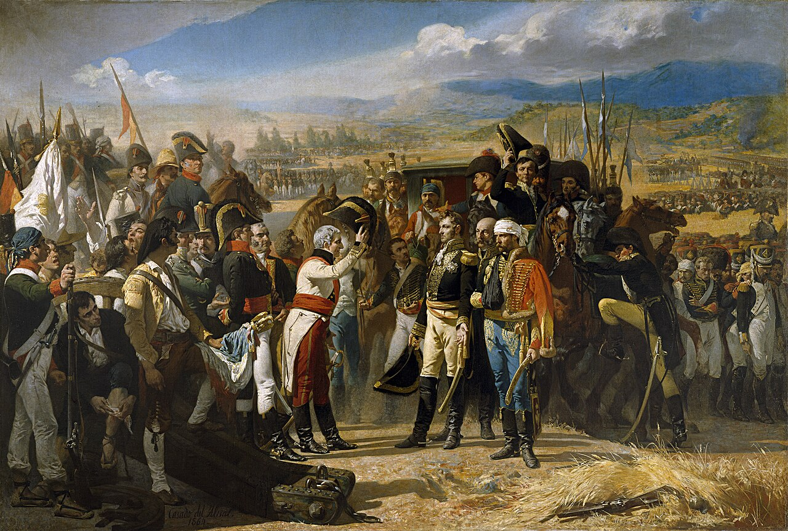
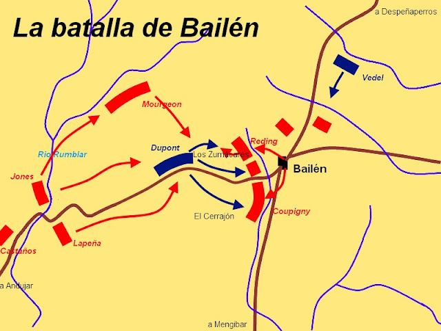

Guerra de la Independencia Española · 1808
BATALLA DE BAILÉN
19 de Julio de 1808 · Bailén, Jaén, Andalucía
✦ ✦ ✦

«La Rendición de Bailén» — José Casado del Alisal, 1864 · Museo del Prado

CASTAÑOS
Gral. en Jefe · Ejército de Andalucía
🇪🇸 Bando Español
Efectivos
~29.770 hombres
Posición
Media luna · Altos de Bailén
Al mando en campo
Gral. Teodoro Reding
Artillería
Superior alcance
Bajas
~1.000 hombres
Teatro de Operaciones · Andalucía · 1808

2.034
Bajas francesas
17.635
Prisioneros
1ª
Derrota napoleónica
CONTEXTO
Napoleón impone a su hermano José I como rey de España. El 2 de Mayo de 1808 estalla la guerra. Dupont recibe orden de conquistar Andalucía, pero queda atrapado entre Sierra Morena y el Guadalquivir, con 30 °C de calor, sin agua y rodeado por dos ejércitos.
CONSECUENCIAS
▸José I abandona Madrid el 28 de julio de 1808
▸Primera rendición de un general napoleónico desde 1801
▸Austria declara la guerra a Napoleón en 1809
▸Napoleón acude en persona con 250.000 hombres
▸Nace la Junta Suprema Central · embrión del Estado liberal
DUPONT
Gral. Pierre · 5º Cuerpo Gironda
🇫🇷 Armée Française
Efectivos
~22.000 hombres
Error fatal
Atacó en inferioridad numérica
Temperatura
30 °C · Sin acceso al agua
Refuerzos
Vedel llegó demasiado tarde
Resultado
Rendición · Deshonra · Prisión
NAPOLEÓN SOBRE DUPONT
«El general Dupont ha deshonrado nuestras armas. Ha cometido una falta que ninguna razón puede excusar.»
✦ ✦ ✦
«El 19 de julio de 1808, Bailén — una villa de 1.500 almas — escribió uno de los capítulos más importantes de la Historia de España.»
Guerra de la Independencia · Bailén 1808 · Wargame Histórico